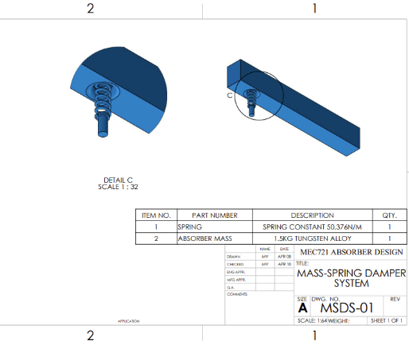
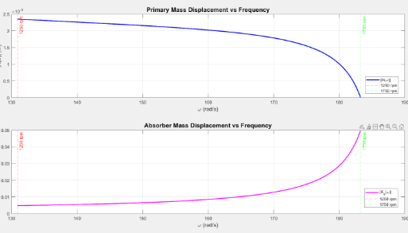
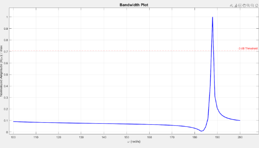

Helicopter Tail Rotor
Vibration Absorber
Designed a lightweight spring-mass system to mitigate rotor-induced vibrations in helicopter tails, with full MATLAB simulation and SolidWorks modelling.
For this project, I designed a vibration absorber system to mitigate rotor-induced vibrations in the tail section of a helicopter. The problem: a 100g unbalanced mass creating excessive vibrations that could compromise structural life, stability, and passenger safety.
The solution was a single-degree-of-freedom (SDOF) spring-mass-damper absorber tuned specifically for the rotor's operating range of 1250-1750 rpm.
A full SolidWorks model of the mass-spring absorber was developed for integration into the tail rotor structure. The model captures the key dimensional relationships between the absorber mass, spring element, and mounting interface.


- Modelled the absorber system as a single-degree-of-freedom (SDOF) spring-mass-damper
- Conducted force and torque analysis to size the absorber for rotor-induced oscillation
- Optimised absorber mass at 1.5 kg with spring stiffness of approximately 58,225 N/m
- Produced MATLAB frequency response and bandwidth plots showing effective vibration mitigation across the full operating range
- Confirmed resonance control and stability improvements across all rotor speeds
- Created a SolidWorks model of the mass-spring absorber for integration into the tail rotor structure
MATLAB was used to model the frequency response of the system and validate the absorber design across the full operating range. The plots below confirm effective vibration mitigation and resonance control.

